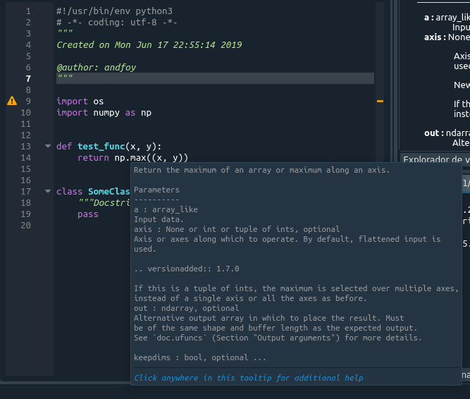
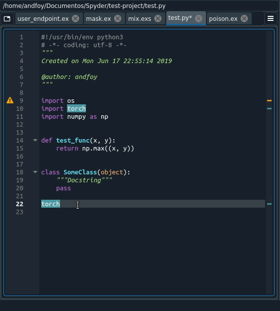

Spyder 4.0 beta4: Kite integration is here
Kite is sponsoring the work discussed in this blog post, and in addition supports Spyder 4.0 development through a Quansight Labs Community Work Order.
As part of our next release, we are proud to announce an additional completion client for Spyder, Kite. Kite is a novel completion client that uses Machine Learning techniques to find and predict the best autocompletion for a given text. Additionally, it collects improved documentation for compiled packages, i.e., Matplotlib, NumPy, SciPy that cannot be obtained easily by using traditional code analysis packages such as Jedi.

By incorporating Kite into Spyder, we will improve and provide the ultimate autocompletion and signature retrieval experience for most of the scientific Python stack and beyond. For instance, let’s take a look at the following PyTorch completion. While the Language Server Protocol server would not complete some of the functions, e.g. torch.linspace, Kite is able to return it successfully:

Another benefit of using Kite is that of personalized completions, due to incremental ML analysis performed by the analysis engine, which keeps track of the keypresses and text writing style, alongside common usage patterns, this way users will get a personalized experience that improves over time.
We are working in collaboration with the Kite team to improve our autocompletion experience for the upcoming 4.0 release of Spyder. We plan to have all Kite features tested and ready to be used; that includes adding on-the-fly completions and code snippets for autocompletions.
To start using Kite, you just need to install the Kite client from their web page. They offer client packages for Windows, Linux and MacOS that are easy to install. Once Kite is installed on the system, Spyder is able to detect it and start the Kite client automatically.
Our new Kite client will work alongside the new Language Server Protocol and the usual fallback tokenizer for files that cannot be analyzed by either the LSP or Kite. Thus, Spyder will be able to provide an optimal autocompletion experience for Python and other languages. Besides that, it is possible to define the priority between different completion plugins to show a completion source result first over the other completion plugins.
Last but not least, as part of this novel client, we are introducing a new completion API that enables to write third-party completion clients for Spyder that require integration with the code editor and project manager. We offer calls to perform autocompletion, hover requests, signature hints, among others without any hassle. By leveraging this API, it should be possible to add completions and documentation suitable for domain-specific applications developed using Spyder.
The function calls and constants of the new completion API will be added to the Spyder documentation and should be available in the next beta release of Spyder. Additionally, we will provide code snippets support for both LSP and Kite for the next release - please stay tuned!
We, the Spyder development team, hope that these new improvements accelerate your productivity, and we invite you to beta-test them to improve them even more. As always, we are open to your questions, issue reports and contributions on all of our communication channels and our Github repository.